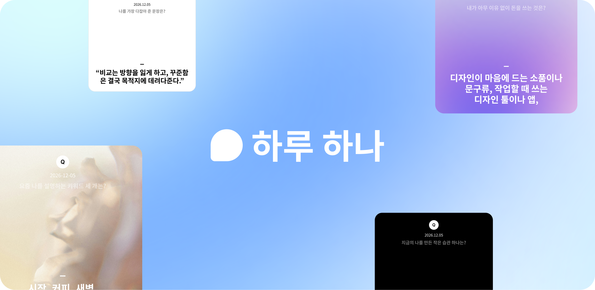
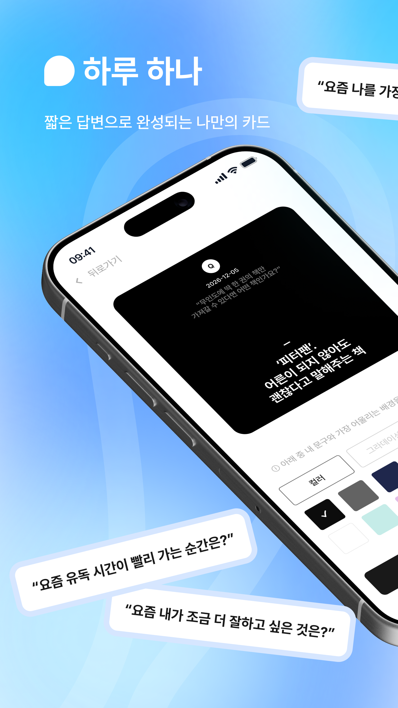
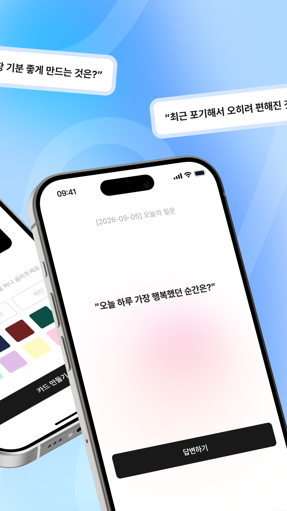
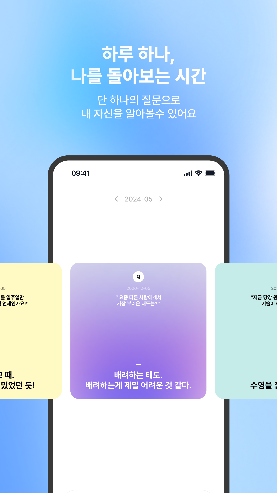
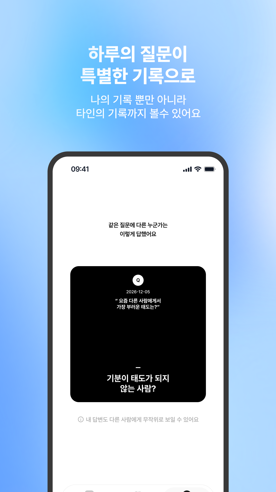

나에 대해 궁금한데, 긴 글은 부담스럽다면
하루 한 질문, 짧은 답 하나.
나를 알아가는 기록.
매일 질문 하나에 짧게 답해요.
쌓인 답과 다른 사람의 생각 사이에서, 조금씩 나를 발견해요.

기록은 멈췄어도,
나를 향한 궁금함은 남아 있으니까.
무엇부터 써야 할지 몰라 미뤘던 날에도,
답할 질문이 하나 있다면 시작은 조금 더 가벼워져요.
- 가볍게하루 한 질문, 짧은 답 하나
- 발견하고지난 답에서 만나는 나의 변화
- 공감해요같은 질문에서 만나는 다른 생각
01 LIGHTNESS · 가벼움
하루에 하나,
짧은 답 하나면 충분해요.
무슨 말을 써야 할지 고민하지 않아도 괜찮아요.
오늘의 질문이 생각의 시작을 열어줘요.
지금 떠오르는 만큼만, 나의 말로 남겨요.
“요즘 나를 가장 기분 좋게 만드는 것은?”
짧게 답하기 배경 고르기 나만의 카드



02 SELF-DISCOVERY · 자기 발견
흩어진 답을 모으면,
내 생각의 흐름이 보여요.
그날 좋아했던 것, 마음에 남았던 순간.
쌓인 카드를 다시 꺼내 보며
예전의 나와 지금의 나를 만나보세요.
오늘의 답이, 나를 이해하는 기록이 되도록.
03 다른 사람의 답변
같은 질문에 대한
다른 사람의 답을 확인해요.
다른 사람의 답을 읽고,
내 답과 어떤 점이 같고 다른지 비교해 보세요.
오늘의 질문에 답변하면 다른 사람의 답을 볼 수 있어요.

오늘, 나에게 궁금한 건 뭔가요?
질문 하나, 짧은 답 하나.
하루 하나에서 나를 알아가는 시간을 시작해요.